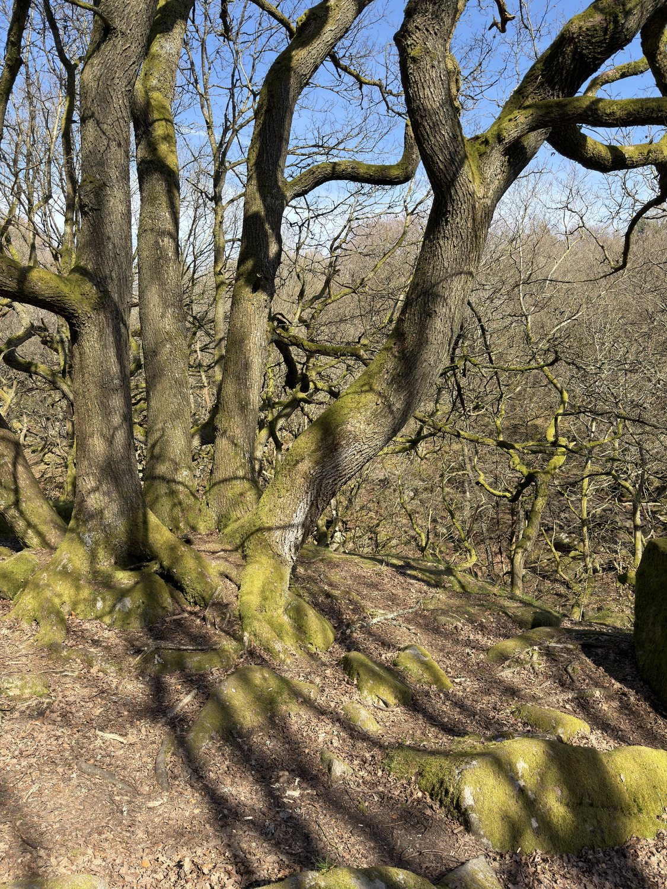
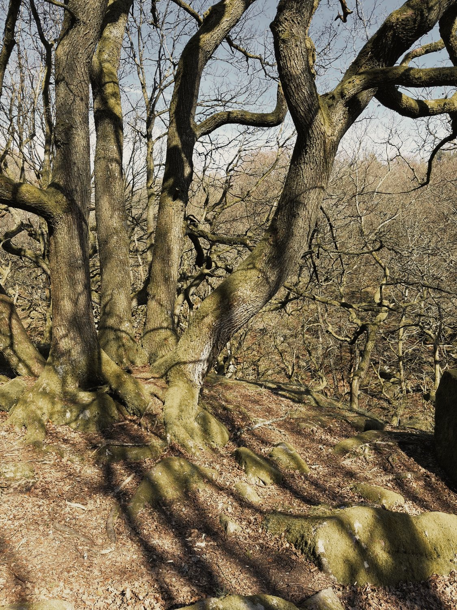

Lansallos
For woods and autumn. Greens go quiet, towards olive and sage, so the turning leaves and the bracken glow against them. The shadows are deep but soft, and the light is creamy rather than white.
It's a strong look, so in CubeCam try it at around 70 to 85% to start with.
Download Lansallos.cube33-point 3D LUT for finished pictures (sRGB / Rec.709), about 1 MB.